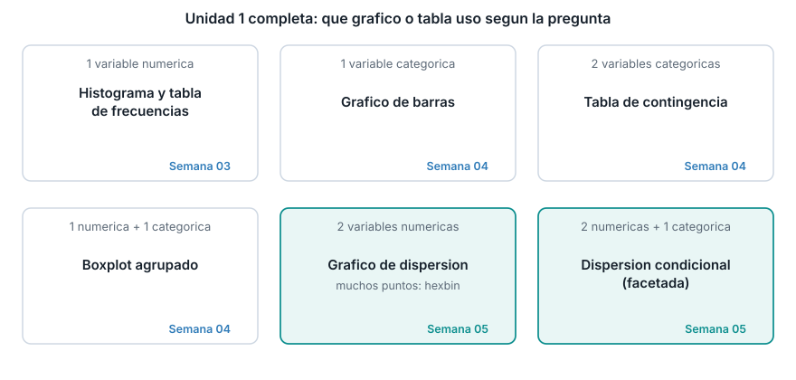

Gráficos de dispersión y condicionales. Cierre de la Unidad 1
Oscar Leonel Sánchez Conde
Institución Universitaria Pascual Bravo
Ruta de la sesión
Bloque 1
Correlación
Coeficiente de Pearson
De -1 a 1
No es causalidad
Bloque 2
Dispersión
Un punto por dato
Sobregraficado
Hexbin
Bloque 3
Condicionales
Mismo gráfico, por grupo
¿Sube o baja la relación?
Cierre de la Unidad 1
Los datos de hoy
Los mismos doce tiempos de intervención de mantenimiento (minutos) de las semanas anteriores, más una variable numérica nueva: el costo de cada intervención, en miles de pesos.
Nada de .corr(), numpy.corrcoef ni scipy.stats.pearsonr. Construimos la correlación desde su fórmula, con Python puro, y la verificamos al final contra pandas.
¿Qué mide la correlación?
Si dos variables suben y bajan juntas, la correlación es cercana a 1. Si una sube cuando la otra baja, es cercana a -1. Si no hay relación lineal clara, es cercana a 0.
Antes de calcular nada: mirando las dos listas de la diapositiva anterior, ¿esperas una correlación cercana a 1, a -1, o a 0 entre tiempos y costo?
def correlacion(x, y): mx, my = media(x), media(y) numerador =sum((xi - mx) * (yi - my) for xi, yi inzip(x, y)) denominador_x =sum((xi - mx) **2for xi in x) **0.5 denominador_y =sum((yi - my) **2for yi in y) **0.5return numerador / (denominador_x * denominador_y)r = correlacion(tiempos, costo)print(round(r, 3))
0.991
Verifica contra pandas
import pandas as pdr_pandas = pd.Series(tiempos).corr(pd.Series(costo))print(round(r_pandas, 3))
0.991
Coincide exactamente con la función manual. tiempos y costo están casi perfectamente correlacionados: la intervención de 145 minutos, la más larga y la más cara (520), no es un dato raro, es consistente con el patrón del resto.
De la lista pequeña al dataset grande
Con 12 datos, un gráfico de dispersión se lee de un vistazo. Con 400 000, no.
kc_tax.csv.gz trae 409 456 viviendas del condado de King, con su valor catastral y su área construida. La correlación es 0.536: moderada, mucho más débil que la de tiempos y costo, y con demasiados puntos para dibujarlos todos como puntos individuales.
El sobregraficado
Con solo una muestra de 5000 viviendas, el centro ya es una mancha densa.
La solución: hexbin
Cada celda cuenta cuántas viviendas caen ahí. La densidad reemplaza al punto individual.
Gráficos condicionales: ¿cambia la relación por zona?
Correlación general: 0.536. Por código postal: entre 0.648 y 0.737.
¿Siempre sube al condicionar?
No. Con airline_stats.csv, la correlación general (0.144) y las seis correlaciones por aerolínea (0.067 a 0.210) siguen siendo débiles. Condicionar confirma, no siempre revela.
Correlación no es causalidad
Que dos variables se muevan juntas no prueba que una cause el cambio en la otra.
El área construida y el valor catastral están correlacionados, pero la zona (código postal) afecta a las dos a la vez. Antes de hablar de causa, pregunta si hay una tercera variable de por medio.
Cierre de la Unidad 1: toda la caja de herramientas

Lo que sigue
Entregable de la semana: informe exploratorio de cierre de la Unidad 1 (10%, dentro del 30% del cierre). El docente entrega el detalle aparte.
La guía trae un ejemplo completo de cómo se arma ese informe, combinando herramientas de las tres semanas de la unidad.
Semana 6: empieza la Unidad 2, variables aleatorias y probabilidad.